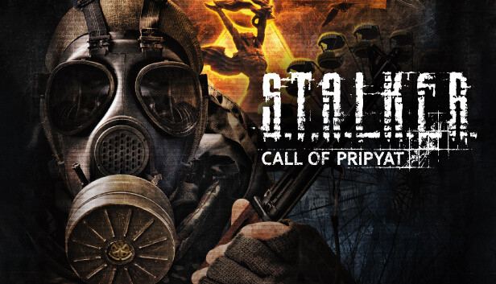
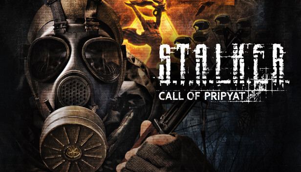

Огляд гри
Події відбуваються після "Тіні Чорнобиля". Гравець — агент СБУ, що досліджує зникнення військової операції.
Переваги
Велика свобода дій, оновлений інтерфейс, продуманий сюжет та нові небезпечні місця Зони.
Події відбуваються після "Тіні Чорнобиля". Гравець — агент СБУ, що досліджує зникнення військової операції.
Велика свобода дій, оновлений інтерфейс, продуманий сюжет та нові небезпечні місця Зони.
Події гри розгортаються одразу після завершення основної лінії "Тіні Чорнобиля". Після провалу великої військової операції "Фарватер", метою якої було встановлення контролю над ЧАЕС, уряд України надсилає нового агента СБУ — майора Дегтярьова. Завдання — з'ясувати причини провалу, долю зниклих вертольотів і зібрати розвіддані про активність в районі Прип’яті. Унікальність сюжету полягає в його нелінійності: ти можеш по-різному розв'язати завдання, змінювати хід подій, впливати на долі персонажів.
Гра запам'ятовується завдяки живим, глибоко прописаним персонажам. Зустрічаємо гравців "Свободи" — веселих ідеалістів, брутальних бандитів, сталкерів-дослідників, таких як Гарік чи Новіков, а також загадкових постатей на кшталт Зулуса. Кожен NPC має своє минуле, мотивацію та характер. Деякі можуть стати союзниками, інші — зрадниками. Особливо вартий уваги штурм Прип’яті: гравець сам формує команду з різних фракцій, і від цього залежить успіх місії.
На відміну від попередніх ігор, у Call of Pripyat з’явилася система «Живого світу». Групи сталкерів патрулюють території, мутанти полюють на звірів, а фракції — воюють між собою незалежно від гравця. Це створює відчуття реального світу, що живе за власними законами. Іноді можна стати свідком боїв між "Монолітом" і вільними сталкерами, іноді — бачити, як мутанти нападають на науковців. А деколи — потрапити під хижий погляд псевдособаки, коли залишаєшся без патронів серед ночі.
Зона тут — не просто місце дії. Вона жива, змінна, ворожа, але водночас приваблива. Вона кидає гравцю виклики, карає за помилки, але винагороджує тих, хто її розуміє. Вона має свою пам’ять, історію і навіть характер. Її сприймають як містичну силу, яка реагує на присутність людини. Особливо це помітно під час викидів — коли небо темніє, електричні бурі гримлять над головою, і життя ховається під землею. Зона — справжній головний герой, не менш важливий, ніж будь-який сталкер чи мутант.
Call of Pripyat має кілька варіантів завершення, залежно від рішень, які гравець приймав упродовж гри. Виживуть чи загинуть твої напарники? Зможеш ти допомогти дослідникам чи зрадити їх? Яку долю обере Дегтярьов? Система кінцівок забезпечує різні варіанти фіналу: від оптимістичного до фатального. Це надає грі емоційної глибини та стимулює до повторного проходження.
Call of Pripyat вважається найбільш збалансованою частиною серії. Саме вона об’єднала всі сильні сторони попередніх ігор і вдосконалила їх. Гра отримала численні нагороди та відзнаки за атмосферу, геймплей і сюжет. Вона стала основою для десятків модифікацій, як-от "MISERY", "Anomaly", "Dead Air". Усе це — свідчення того, що гра залишається живою в серцях фанатів навіть через десятиліття після релізу.